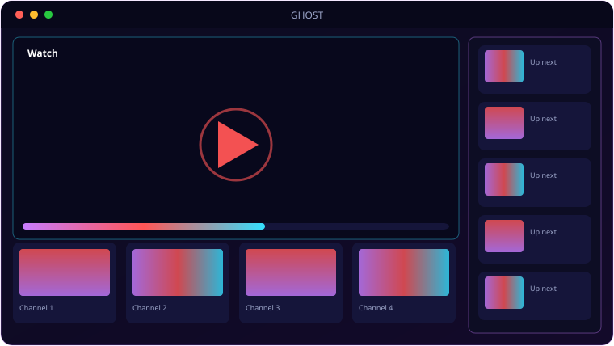

A look inside GHOST.

Everything GHOST brings to the table.
Upload → HLS
Uploads transcode in the background via FFmpeg to 360p/720p/1080p HLS, with an auto-thumbnail grabbed at 3 seconds.
Channels & Subscriptions
Every account is a channel — subscribe, get bell notifications on new uploads, and browse a subscription feed.
Reactions & Comments
Like, Dislike, a WTF reaction and 1–5 star ratings, plus threaded comments with replies.
Groups & Sharing
Public and private groups with roles, group feeds, and a share button that posts a video straight into a group.
External Embeds
Drop in YouTube, Vimeo, Dailymotion or direct MP4 URLs — auto-detected, no transcoding needed.
Admin & Auto-Install
Full admin dashboard plus one-shot installers for Windows (NSSM service) and Linux (systemd + nginx).
🎞️ Upload once, stream everywhere
Drop in a file and GHOST takes over — FFmpeg transcodes it to adaptive HLS in the background while you keep working, and Video.js serves the right quality for every viewer's connection.
- 360p / 720p / 1080p rendered automatically
- Auto-thumbnails grabbed at the 3-second mark
- External videos — YouTube, Vimeo, Dailymotion, direct MP4, auto-embedded
- Player zoom — Shift+Scroll to 1×–5×, drag to pan
System requirements.
Server (self-host)
- OS: Windows 10/11 or any modern Linux
- Runtime: Python 3.10+
- CPU: Dual-core (quad-core recommended)
- Memory: 2 GB RAM (4 GB+ recommended)
- Storage: Scales with your data / uploads
- Network: LAN access, or a port forward / reverse proxy for the internet
Client (any device)
- Browser: Chrome, Edge, Firefox or Safari (current)
- Device: Any desktop, laptop, tablet or phone
- JavaScript: enabled
- Connection: same Wi-Fi as the server, or internet if exposed
- Account: created on first visit
The server needs FFmpeg for HLS transcoding. Transcoding is CPU-heavy — more cores mean faster processing; storage scales with your video library.
The details.
| Stack | Flask + SQLAlchemy/SQLite, FFmpeg HLS, Video.js |
| Qualities | 360p / 720p / 1080p adaptive HLS |
| Social | Subscriptions, reactions, star ratings, threaded comments, groups |
| Admin | Dashboard, user + video management, visibility public/unlisted/private |
| Install | install_windows.ps1 (service) · install_linux.sh (systemd + nginx) |
| Run | python run.py → http://localhost:5000 |
Requires Python 3 and FFmpeg. After first run, register an account then promote it with python make_admin.py <username>.
Get GHOST.
Your own YouTube — HLS streaming, channels, the lot.
⬇ Download GHOSTGHOST source + auto-installers · free · self-hosted